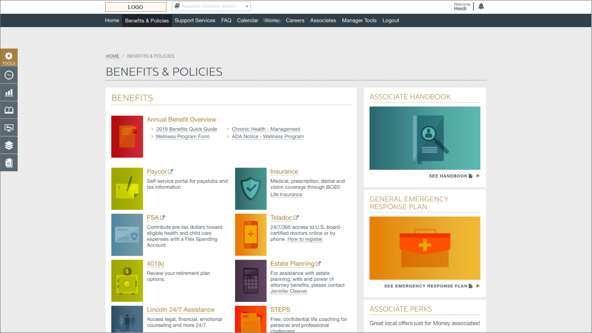
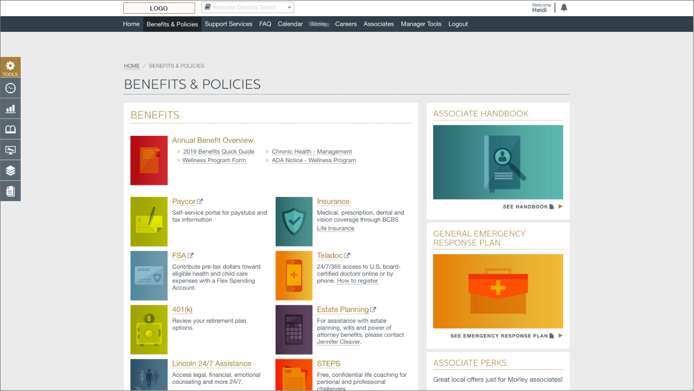

Opportunity
The company experienced tremendous growth and added multiple locations across the U.S. and needed to be able to communicate with all associates digitally.
Research
Research and planning included a deep dive into the overall feature list, resulting in 70 individual features (and considerations for each). We also produced a 160-step preliminary action item plan for the first phase. We researched, documented and discussed intranet best practices and pitfalls of current company-wide communication, largely email (due to the clients we supported, some associates did not have email access) and internal posters and flyers.
My Role
I documented the feature list and task plan gathered from input, developed timeline, wireframe, and styling. I collaborated with the design team on the UI mockup and development team on the functionality plan. I provided QC and the input on user experience along the way and conducted project meetings to keep the team on track, and even purposely tried to incorporate some fun in our meetings (because happy people produce better work, and there is nothing wrong with sharing pet pictures with each other, right?).
Outcome
As a newly built digital team, this was the first big web project that we worked on and managed (in between our normal client projects). Having to define the process from research to UX/UI to development was a wonderful lesson and defined the process for future large projects. Developers worked late in the night on eve of the launch, but it was live on launch day and looked spectacular!
 
